Кесиптик тажрыйба жана билим алуу сапары
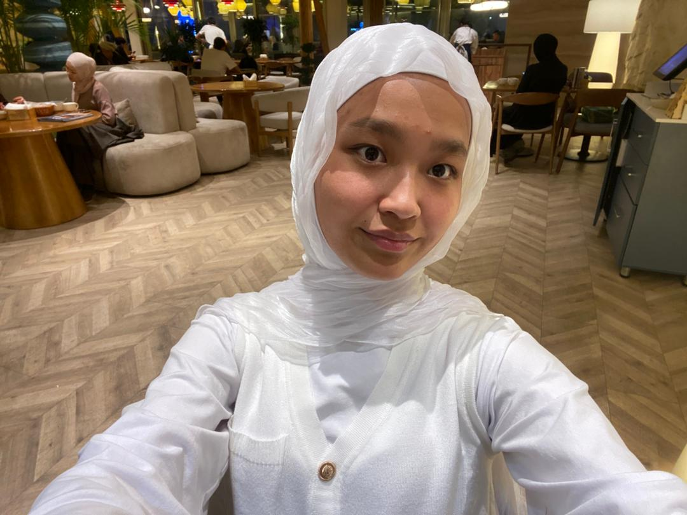
Студент | МФТИТ институтунун КМИ-1-24 группасы| Колдонмо математика жана информатика
📅 Практика: Май 2026
📍 Момун Нурматов атындагы жалпы орто билим берүү мектеби
Мугалимдик кесиптин сырларын үйрөнүү, окуучулар менен иштөө көндүмдөрүн өстүрүү, сабак өтүү ыкмаларын практикада колдонуу.
5-8-класстарга математика сабактарын өтүү, заманбап технологияларды колдонуу, ачык сабак өтүү, окуучулардын билимин баалоо.
Практиканын жыйынтыгында мугалимдик тажрыйба топтодум, 5-8-класстарга сабак өттүм, ачык сабак өтүп бердим.
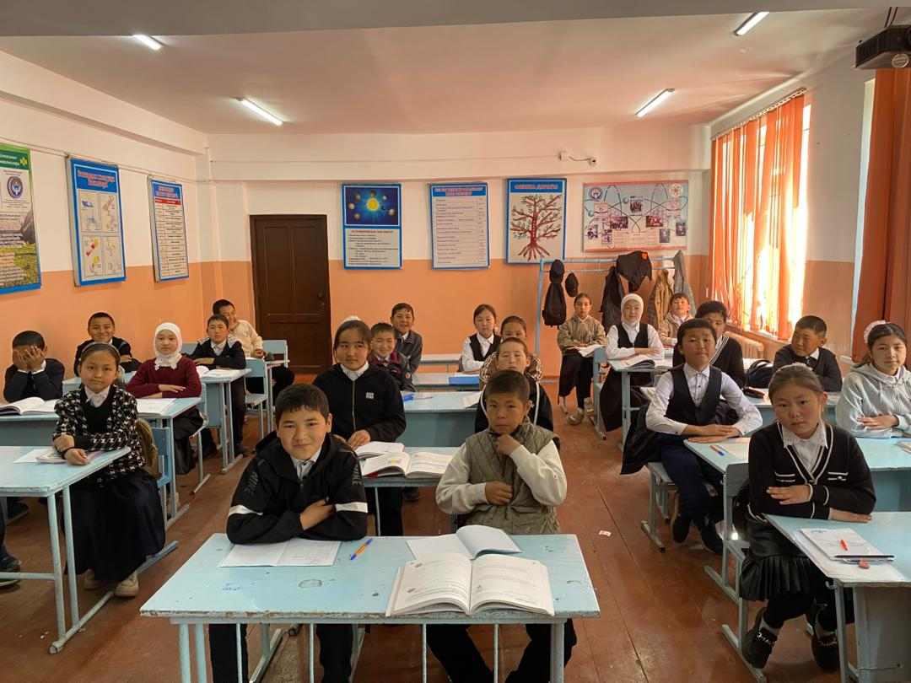
5-класстарга кирип, таанышып, сабакты баштаган учурум. Окуучулар менен мисал иштөө.
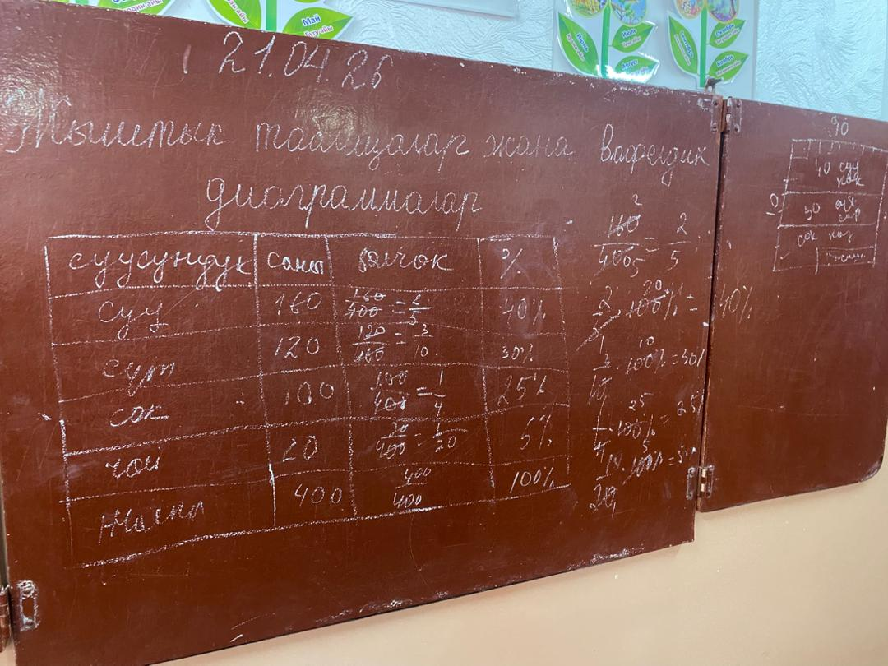
Жыштык таблицалар жана Вафелдик диаграммалар деген теманы өттүк. Окуучуларга түшүндүргөнчө өзүм да диаграммаларды бир эске түшүрүп алдым.
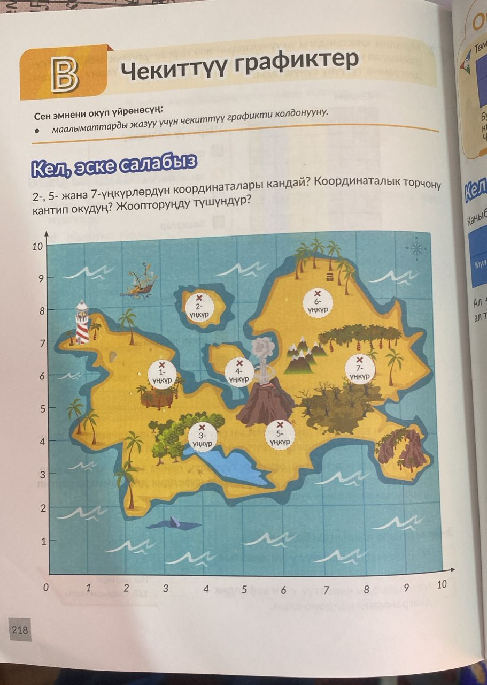
Сабакта каралган суроолор: Чекиттүү график деген эмне? Андан соң графикти туура түзүү, анан практикалык иштерди иштөө боюнча суроолор каралды. Бул сүрөттө сабак учурунда окуучулардын жооптору таблицага түшүрүлүп, андан кийин график түрүндө көрсөтүлүп жатат. Бул ыкма маалыматтарды туура чогултуу жана талдоо көндүмдөрүн өнүктүрүүгө жардам берет, жана ошондой эле түз сызууну дагы үйрөтөт. Бул теманы биз 5-класстардын баарына түшүндүрүп чыктык, 5-класстардан төртөө бар, а,б,в,г.
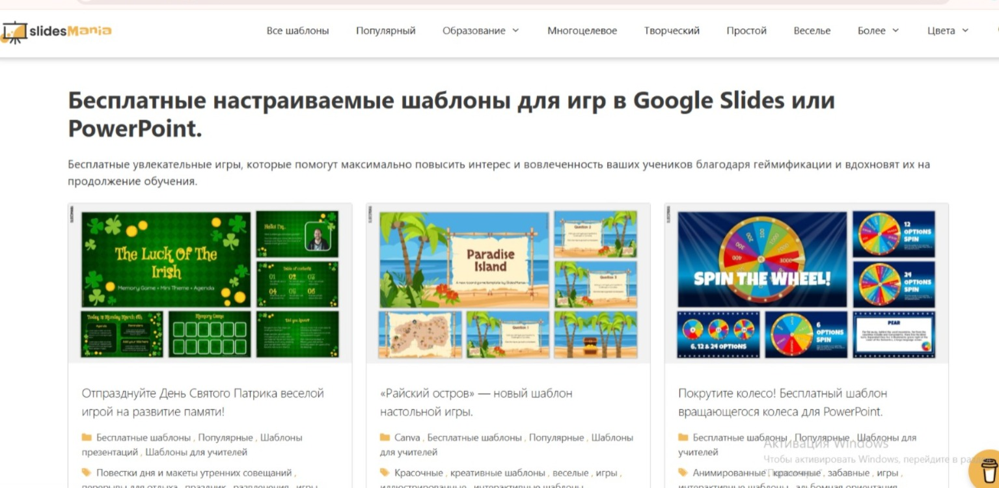
Бул сабакта биз шкала эмне экенин жана ал диаграмманын ортосундагы майда сызыкчалар экенин билдик. Анан окуп үйрөнгөнүбүздү бышыктоо үчүн биз Кел машыгабыз деген жердеги мисалдарды иштедик. Анан да биз бул диаграмма деген темаларда графикти туз чийүүнү окуучуларга үйрөтүп жатабыз. Мындан сырткары биз балдарга жалаң гана сабакты эле окута берсе балага кызыксыз болуп каларын билип, Slides Mania ж.б.у.с сайттардан оюндарды уюштуруп балдарды ойнотуп жаттык. ( колесо, пазл, фрогтастик ж.б.) ушул оюндарды ойноттук.
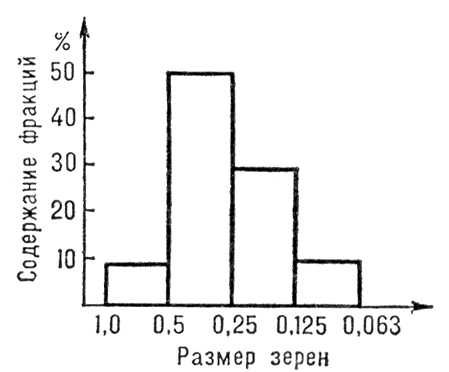
Биз карап өткөн суроолор булар: Гистограмма – бул берилиштерди тик бурчтуулар (столбиктер) аркылуу көрсөтүүчү диаграмма. Ал сандык маалыматтардын бөлүштүрүлүшүн көрсөтөт. Гистограмма кайсыл учурда колдонулаарын жана мамычалуу диаграммадан кандай айырмалана турганын карап чыктык. Гистограмма жаш курактын бөлүштүрүүдө, баалардын жыштыгын анализдөөдө, сатуу көлөмүн салыштырууда, температуранын өзгөрүшүн көрсөтүүдө колдонуларын, анан мамычалуу диаграммадан айырмасы бул гистограмма бири-бирине жакын жайгашат, ал эми мамычалуу диаграмма бири-бирине жармашпай ортосунда боштук болоорун окуучуларга түшүндүрдүм. Ушул эле сабакты башка 5-класстарга да өтүп чыктым.
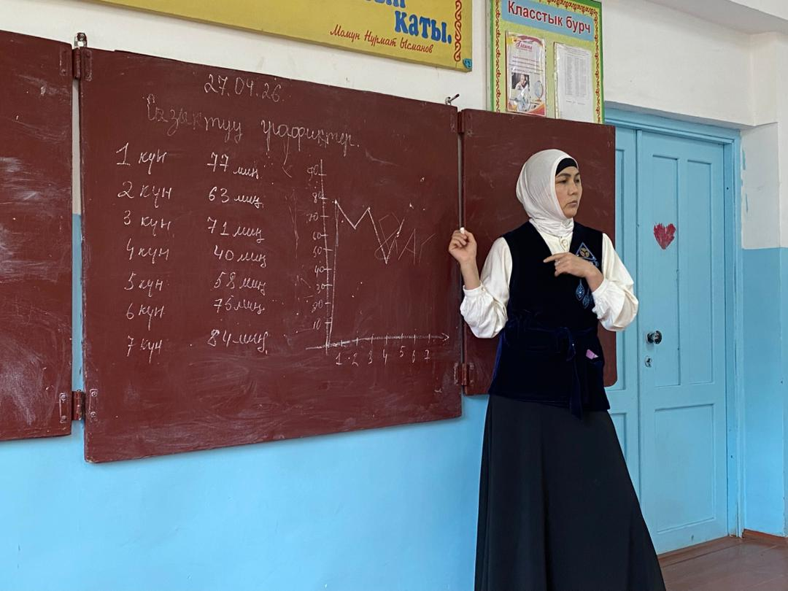
Бул күнү мен окууга барсам киребериште информатик эжекелер Bilim Ai дан окуучула үчүн атайын суроолорду уюштуруп приздерди даярдап койгон экен.Теманы түшүндүрүп болуп Кел машыгабыз деген жердеги мисалдарды иштей баштадык, түшүнгөн нерселерибизди практика жүзүндө көрсөтүү үчүн. . Кийин окошка болгондо Сабыр агайдын сабагынан колумдан келишинче аракет кылып жаттым. Кийин мен кирип жүргөн класстар менен тыныгуу маалында сүрөттөргө жана видеолорго түшүп жаттык. Мындан сырткары мектепте залда теннис ойноочу жери бар ошол жерде теннис ойноп жүрдүк.
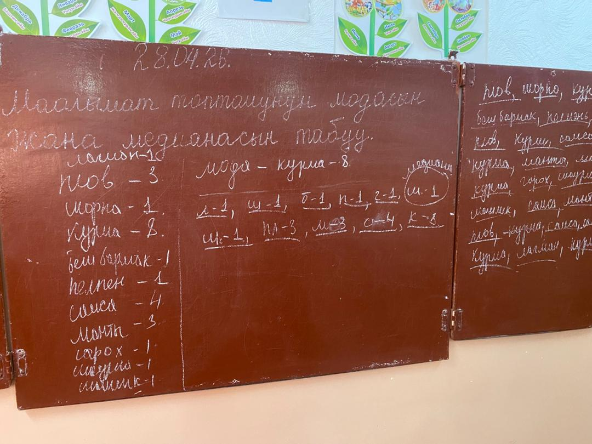
Эжекем түшүндүрүп берип жатты. А мен болсо кунткоюп угуп блокнотума керектүү жерлерин жазып жаттым, отчет үчүн. Анан окуучуларга түшүнүктүү болуусу үчүн алардан сурамжылоо жүргүзүп алдык. Аларга эң жакшы көргөн тамактарын айтуусун айтып, доскага жаздык да теманы түшүндүрө баштадык. Мода жана медиана эмне экенин түшүндүрүп эстеринде калуусу үчүн өз алдынча иштегенге мисалдарды бердик. Мода деген- бул эң көп кездешкен сан жер сөз Медиана- бул сандынже сөздөрдүн тең ортосу Мисалы: Класстагы окуучулардын бою: 1.50, 1.55, 1.55, 1.51, 1.55,1.49, 1.45см Модасы- 1.55см (эң көп кездешкен см) Медианасы- 1.51см (тең ортосу)
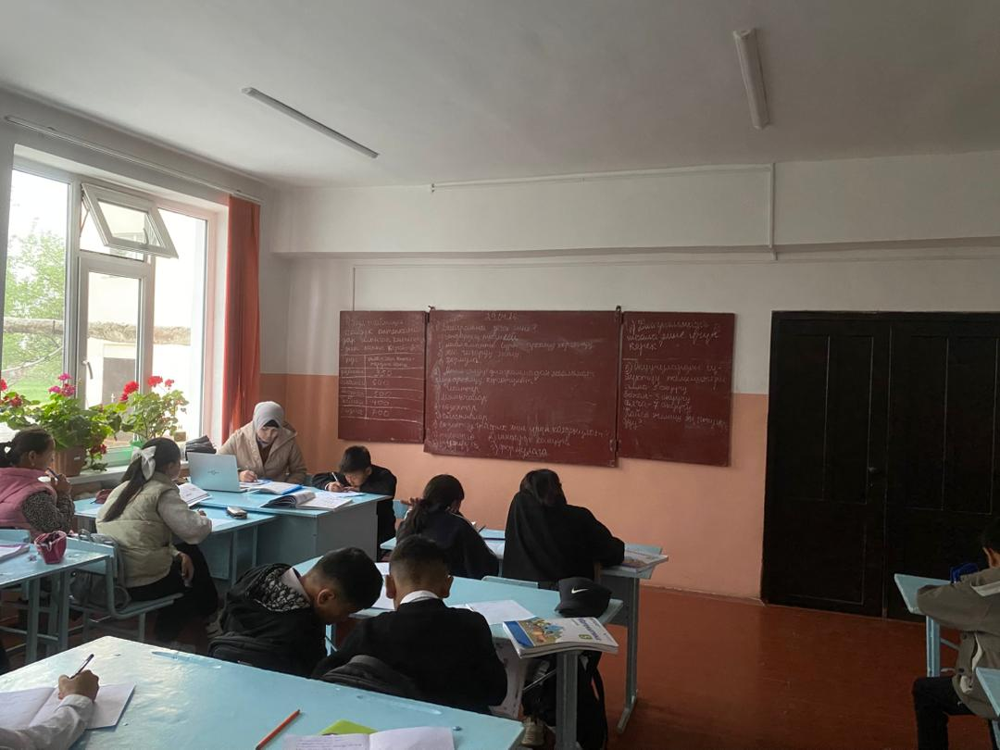
Саат 8де сабак башталды, биз 5-класстарга тест жаздырдык. Каникулга чыгып кетишкиче. Тест ушул өтүлгөн темалар боюнча эле берилди. Өтүлгөн темалар болсо да, ката кетирген окуучулар көп болду.
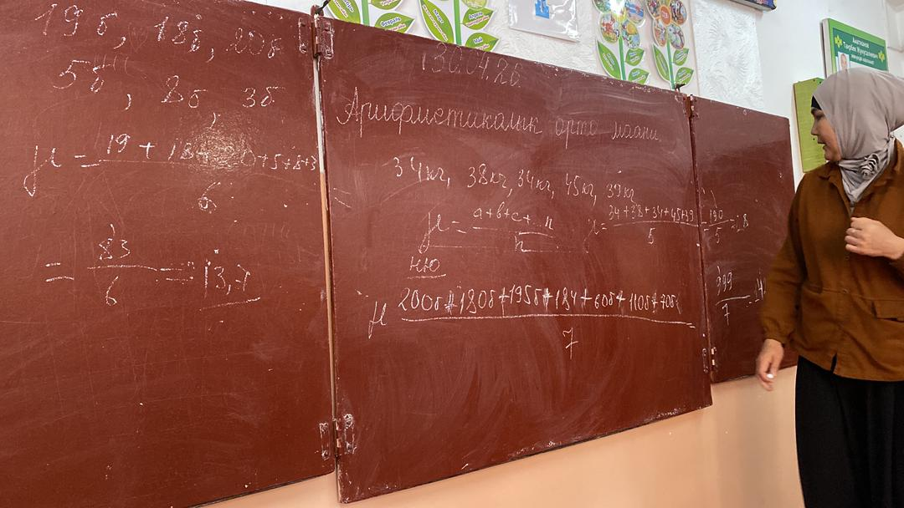
Арифметикалык орто маанини табуу абдан оңой экенин үйрөттүк. Мисалы: Окуучунун баалары Бир окуучу математикадан 5 сынак тапшырды жана төмөнкү бааларды алды: 4, 5, 3, 4, 5 деген бааларды алды, эми биз арифметикалык орто маанини табуу үчүн ушул сандардын баарын кошуп анан 5ке бөлүп коебуз. 4+5+3+4+5=21 Эми ушул чыккан санды 21ди 5ке бөлүп коебуз 21: 5 = 4,2 Демек, бул мисалдын арифметикалык орточосу 4,2ге барабар экен. Класстагы окуучуларга ушинтип көрсөтүп бердим да кийин өздөру иштеши үчүн дагы ушул сыяктуу мисалдарды жазып бердим. Андан соң ушул теманы калган класска дагы түшүндүрүп бердим, ушуну менен биздин бүгүнкү сабагыбыз соңуна чыкты.
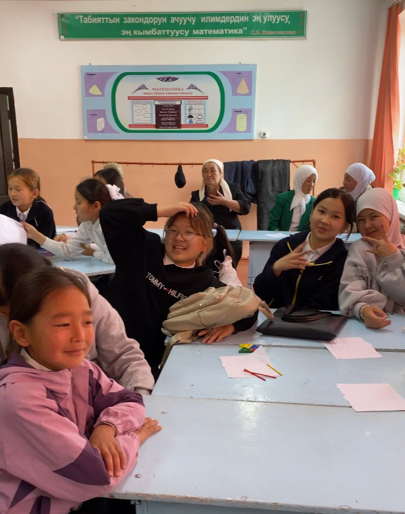
Бул күнү мени жетектеген эжекем ачык сабак өтүп берди. Эжекем Масштаб деген тема боюнча сабак өттү, эжекемди көрүп мен абданкөп нерселерди үйрөндүм эжейимден окуучулардын көңүлүн өзүнө кантип бурдуруу керек экенин үйрөндүм. Эжекем окуучуларды кызыктырып 1-эле глобусду көргөзгөндө окуучулар кунт коюу менен эжекени тиктеп калышты. Ошентип сабак өтө сонун өттү десем болот. Окуучулар бири-бири менен жарышып аябай кызыгуу менен мисалдарды чыгарып жатышты.
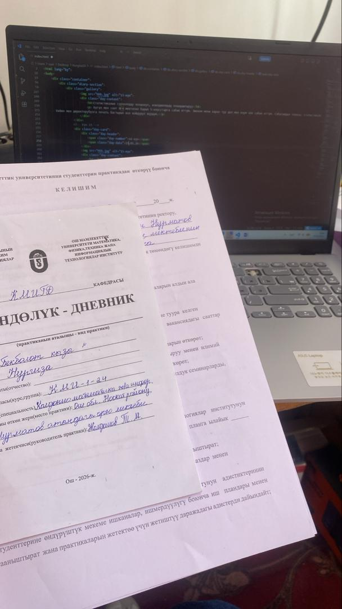
Бул күнү биз сабак өткөн класстарга экзамен болду. Ошондуктан биз сабак өткөн жокбуз. Учурдан пайдаланып мен өзүмдүн иштеримди кылып жаттым. Агайлар менен теннис ойнодум. Андан соң мен сабактарга даярдандым. Ноутбукта мисалдарды чыгарып жаттым.
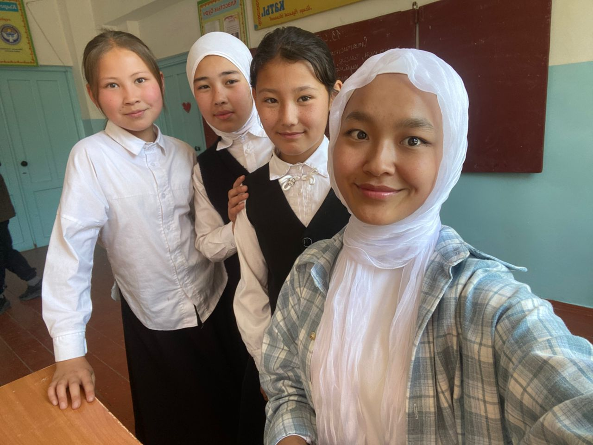
Бул күнү мен Ачык сабак өтүп бердим. Сабагымдын темасы: Статистикалык изилдөө болду. Бул сабакка мен 2 күн даярдандым. Канвадан 5 беттик слайд түздүм. Ал эми Wordwall дан колесо оюнун түздүм. Дагы пазл оюнун да түздүм, пазл оюнун өтүлгөн темалар боюнча кылдым муну мен сабактын башында ойноттум. Ал эми мен окуучулардын теманы түшүнгөнүн билүү үчүн атайын жумушчу барактарды ксерокопия кылып чыгарып алдым. Ачык сабакты бүтүрүп алган соң окуучуларым менен сүйүнүп олтуруп эстеликке бир сүрөткө тушуп алдык.
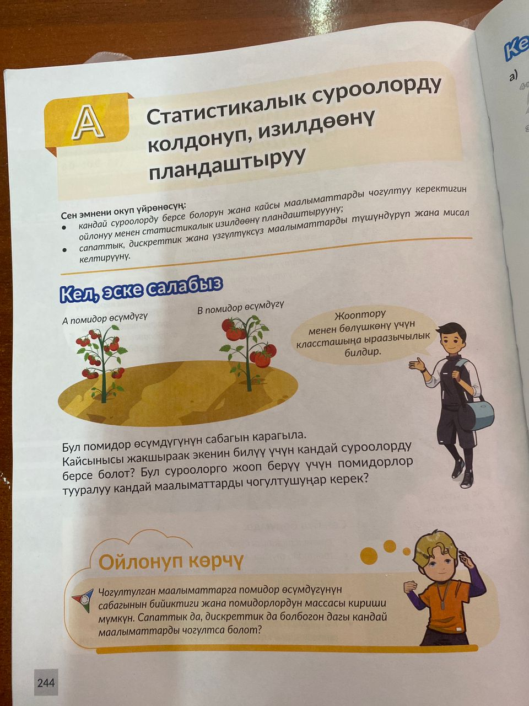
Бүгүн мен саат 8ге мектепке барып 5-класстарга сабак өттүм. Эжекем мени карап тур деп мен өзум эле сабак өттүм. Сабагымдын темасы: Статистикалык суроолорду колдонуп, изилдөөлөрдү пландаштыруу деген тема болду. Ушул беттеги помидорлорду карап чыгып кайсыл помидор жакшы өсүп жатканын таптык да теманы жакшыраак тушунуп баштадык. Андан соң биз Кел машыгабыз дегендеги мисалдарды иштеп баштадык. Кийин мен директорубузга печать бастырып кол койдуруп жүрдүм.
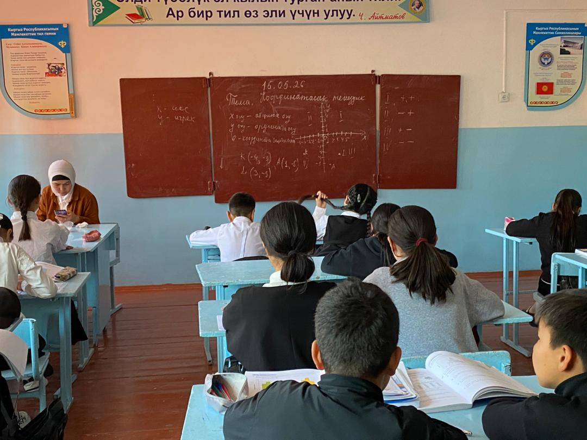
Координаталык тегиздик - математиканын эң маанилүү түшүнүктөрүнүн бири. Ал аркылуу: Чекиттердин ордун так аныктайбыз Фигураларды түзөбүз Графиктерди түшүнөбүз Көптөгөн практикалык маселелерди чечебиз деп түшүндүрдүк. Координаталык тегиздиктин жашоодо колдонулушу: Карта менен иштөө - шаардагы объектилердин ордун аныктоо Оюндар - шахмат, деңиз согушу Графиктер - маалыматтарды көрсөтүү Архитектура - имараттарды долбоорлоо Навигация - GPS системасы
Бул практика мен үчүн абдан пайдалуу болду. Мен төмөнкүлөргө ээ болдум: